☰
Página Principal
Reportes y pósters ▾
Práctica 1: Reconocimiento de Equipos
Práctica 2: Sedimentación
Práctica 3: Filtración
Práctica 4: Planta Purificadora
Práctica 5: Ósmosis Inversa
Práctica 6: Extracción Líquido-Líquido
Práctica 7: Destilación
Práctica 8: Adsorción
Práctica 9: Secado
Práctica 10: Cristalización
Anexos
Teoría

Reconocimiento de Equipos
Póster de Práctica 1
Silao de la Victoria, Gto., a viernes 5 de septiembre del 2025
üì• Descargar p√≥ster en PDF